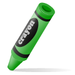
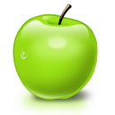
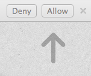

Step 1:
Grab something green. Anything will do, but brighter greens work the best.


Step 2:

In order to begin painting, your browser will ask for access to your webcam. Click allow and your ready to go.
Step 3:
You can choose colors manually or with your voice. Click 'Speak', allow use of your microphone, then say the name of the color you want to paint with